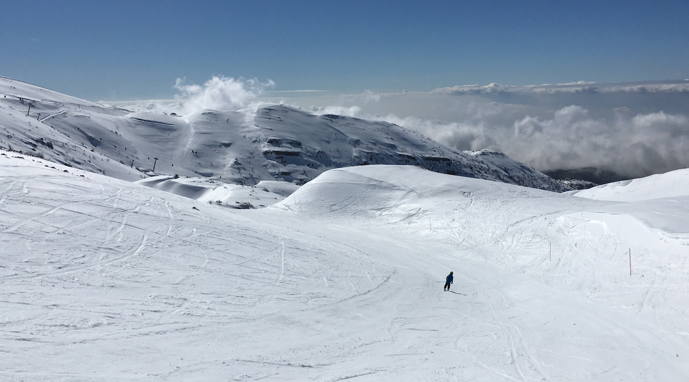
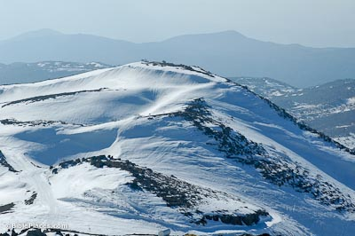
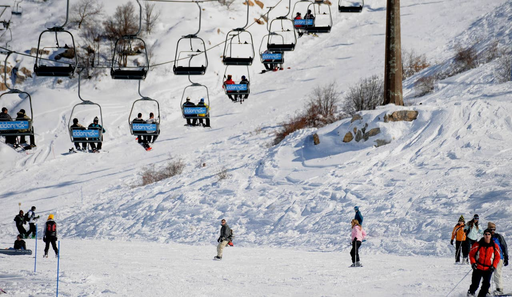

|  |  |  |
The highest point in Israel is an inviting place to hike all year round. Skiers, of course, will head straight for Mount Hermon in winter, but those who prefer to walk can also have a ball there. When summer has already set in over the rest of the country, Mount Hermon is still bursting with the vitality of an extended springtime.
In the dog days of July and August, take a break from the beach and the steaming city and cool off on the Golan. Don't forget to bring warm clothing with you - the nights are nippy. On a clear day, which is the norm in summer, you'll have a superb view of the mountains of: Galilee, the Golan, and southern Lebanon. And even in the middle of summer, there are still snowy areas in the upper part of Mount Hermon (the chair lift operates all year round).
Summer visitors can enter the site free of charge and take part in free tours led by guides from the Nature Reserves Authority. You can also take a jeep tour, with the expert assistance of Safari Hahermon.
The slopes of Mount Hermon offer other attractions as well. Part of the area is classified as a military zone, which means you'll have to make advance arrangements if you want to visit there. The hosts at your lodgings can tell you how.
A particularly noteworthy Hermon site is Har Habtarim, 1,296 meters above sea level on the slopes of Katef Sion. According to tradition, this is where God promised Abraham that He would give the land to his descendants. An ancient tomb marks the spot, and huge oaks grow next to it.
Next to the summit of Har Kahal (1411 meters above sea level), lead quarries have been discovered; the source of raw materials for the kohl used in ancient eye makeup. Further down is the proud Ka'alat Namrud, one of the best preserved maseluke fortresses from the Crusader period in Israel. The citadel overlooks the Banias Spring, where you can have a refreshing hike even on the hottest summer days.
At the Druse hospitality center in the village of Ein Kinya, you can learn about Druse life on the Golan and get a taste of it as well, with Druse pita, labaneh, and coffee.
Next to the tomb of Nebi Hazuri, the Jewish National Fund developed a lovely wayside picnic spot. In Neve Ativ, art lovers will enjoy visiting the gallery and workshop of a local artist who works in glass. Hungry? Habokrim Restaurant (Merom Golan) and the Druse eateries will satisfy any appetite. In summer, don't miss the berry picking at Moshav Sha'al.